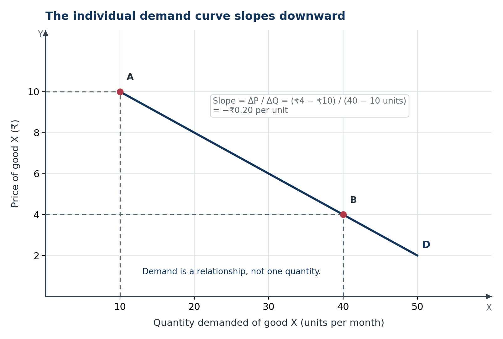
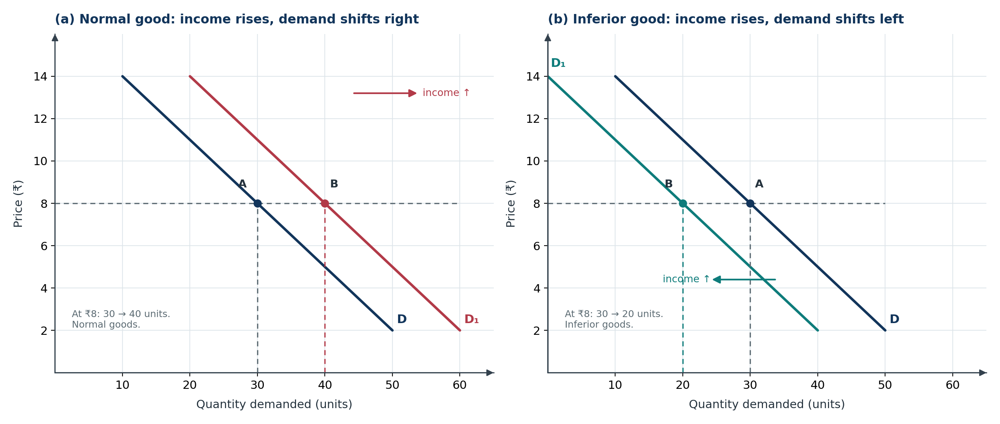
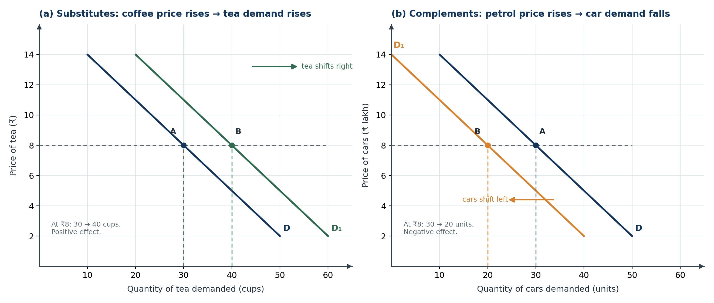
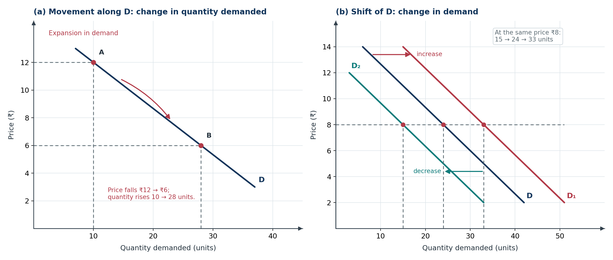
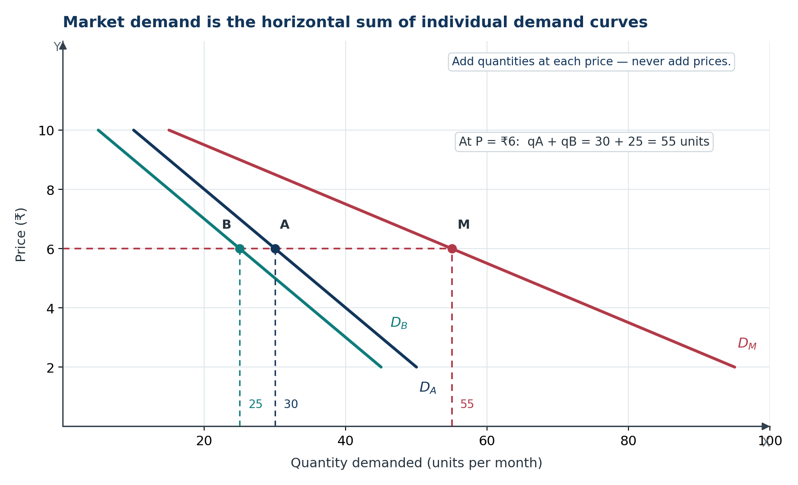
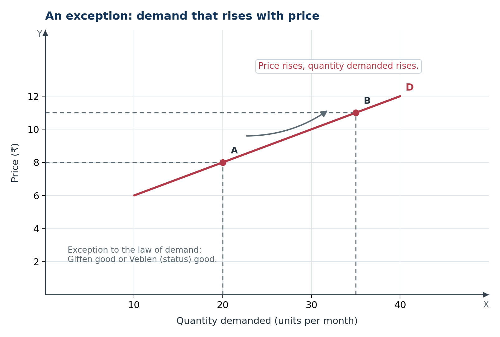

Microeconomics · Class 11Chapter 3Notes + quick revision
Demand
Every market story starts here. Demand is the quantity a buyer is willing and able to buy at each price — and the strange, reliable fact that this quantity usually moves opposite to price. Learn it properly once and supply, elasticity and equilibrium all become easier.
Chapter at a glance
Nine stops: from the four elements hidden inside the word “demand” to the exceptions that make a demand curve slope upward. Tap a card to jump straight in.
The one-line idea: demand is the quantity a buyer is willing and able to buy at each price in a given period, and almost every result in microeconomics begins with the fact that this quantity usually moves opposite to price.
The core question: why does quantity demanded normally fall when price rises — and when does it fail to fall?
Key Terms — Read These First
The words that carry marks. Read them once now, then test yourself after the chapter.
- Demand
- The quantity of a commodity a consumer is willing and able to buy at each possible price during a given period.
- Desire, want, demand
- A wish; a wish backed by ability and willingness; a want backed by ability, willingness, a price and a time period.
- Flow
- A quantity measured over a period of time, such as 40 cups per day. Demand is a flow, not a stock.
- Individual demand
- One consumer's quantity demanded at each price in a given period.
- Market demand
- The total quantity all consumers are willing and able to buy at each price in a given period.
- Demand schedule
- A table showing the quantities demanded at various prices during a given period.
- Demand curve
- The graphical representation of a demand schedule, with price on the vertical axis and quantity on the horizontal axis.
- Law of demand
- Other things being equal, quantity demanded is inversely related to price.
- Ceteris paribus
- “Other things remaining the same.” It isolates the effect of price from every other determinant.
- Demand function
- The functional relationship between quantity demanded and the factors that influence it, such as Qd = f(Px, Y, Pr, T, E).
- Normal good
- A good whose demand rises when income rises and falls when income falls; the income effect is positive.
- Inferior good
- A good whose demand falls when income rises and rises when income falls; the income effect is negative.
- Substitute goods
- Goods that can replace one another. A rise in the price of one raises demand for the other: positive cross-price effect.
- Complementary goods
- Goods used together. A rise in the price of one lowers demand for the other: negative cross-price effect.
- Cross demand
- The relationship between demand for one good and the price of a related good: Dx = f(Py).
- Change in quantity demanded
- A movement along the same demand curve caused by a change in the good's own price.
- Change in demand
- A shift of the whole demand curve caused by a non-price factor.
- Expansion and contraction
- Movements along the curve: expansion is a fall in price and a rise in quantity; contraction is the reverse.
- Increase and decrease in demand
- Shifts of the curve: increase is a rightward shift; decrease is a leftward shift.
- Giffen good
- A special inferior good with a large budget share whose demand rises when its price rises.
- Veblen good
- A status good whose demand rises when its price rises because the high price is part of the attraction.
- Conspicuous consumption
- Spending meant to be seen, so that price signals exclusivity.
The Meaning of Demand
The idea of this section. In everyday speech, “demand” means wanting something. In economics it means wanting it, being able to pay for it, at a particular price, in a particular period. All four parts must be present.
1.1 Desire, want and demand
A desire is a mere wish to possess a commodity. A want is a desire backed by the ability and willingness to satisfy it. Demand is a want backed by willingness and ability to pay a particular price, for a particular quantity, during a given period.
| Term | What backs it | Example |
|---|---|---|
| Desire | The wish alone | A student wishes for an ₹80,000 laptop |
| Want | Ability and willingness | She has ₹60,000 saved and will spend it |
| Demand | Ability, willingness, price and time | At ₹55,000, she buys one laptop this month |
The ladder runs one way: every demand is a want, every want is a desire, but not the reverse. A wish without money is not demand; money without willingness is not demand either.
1.2 The four elements of demand
Definition. Demand is the quantity of a commodity that a consumer is willing and able to buy at each possible price during a given period of time.
- Quantity: a definite number of units, not “some” or “a lot”.
- Willingness and ability: both are needed. Wanting without money, or money without willingness, is not demand.
- Price: demand exists at a price. The same buyer takes more at a lower price.
- Time period: per day, week or month. Without it, the number has no meaning.
Exam pointer. If a question says “demand”, check all four elements. Most one-mark errors come from quoting the definition without the price and the time period.
1.3 A flow, and two levels of demand
Definition. A flow is measured over a period; a stock is measured at a point of time. Demand is a flow: a shop may hold 500 packets in stock today but demand 40 packets per day.
Individual demand is one consumer's quantity at each price. Market demand is the total all consumers will buy at each price in a given period. At ₹40, Asha buys 2 bottles and Bharat 3, so market demand is 5 bottles.
Memory line. Stock is a photograph; flow is a video. Demand is a video, because it is always “per period”.
- Q1. Why is a poor person's wish to own a car not demand?
- Q2. Ravi has ₹6,000, will spend up to ₹5,500, and a bicycle costs ₹5,200 this month. Is his want a demand?
- Q3. “Demand is a flow, not a stock.” Explain with an example.
Show answers
- It lacks ability to pay. Demand needs willingness, ability, a price and a time period.
- Yes: ability, willingness, the price of ₹5,200 and the period are all present.
- Demand is per unit of time, such as 40 cups per day. Stock is at a point of time, such as 500 cups in the shop today.
The Demand Schedule, the Curve and the Law
The idea of this section. A demand schedule turns the definition into a table; a demand curve turns the table into a picture. The law of demand is the sentence that both are expressing.
2.1 The demand schedule
Definition. A demand schedule is a table showing the quantities of a commodity a consumer will buy at various prices during a given period.
| Price of X (₹) | Quantity demanded (units) |
|---|---|
| 10 | 10 |
| 8 | 20 |
| 6 | 30 |
| 4 | 40 |
| 2 | 50 |
As price falls from ₹10 to ₹2, quantity rises from 10 to 50 units. Read the table downwards and the inverse relationship is already visible.
Pointer. A schedule is a list, not a graph. The examiner may ask you to “prepare” one, so keep the price column first and the quantity column second.
2.2 The demand curve and its slope
Definition. A demand curve is the graphical representation of a demand schedule. Price is on the vertical axis and quantity on the horizontal; each row becomes a point, and joining the points gives the curve.

What to notice. The curve slopes downward; the dashed lines read off A (₹10, 10 units) and B (₹4, 40 units).
Between A and B, slope = (4 − 10) / (40 − 10) = −6 / 30 = −0.20. A ₹1 fall in price is associated with 5 more units.
Warning. With price on the vertical axis, slope is ΔP/ΔQ, not ΔQ/ΔP. The negative sign records the inverse relation; the size says how steep the line is.
2.3 The law of demand and ceteris paribus
Law of demand. Other things being equal (ceteris paribus), quantity demanded is inversely related to price: price rises → quantity demanded falls; price falls → quantity demanded rises.
Ceteris paribus means “other things remaining the same”. It isolates the price effect. The law assumes that the prices of substitutes and complements, income, tastes and future-price expectations do not change; for market demand, population and income distribution are also constant.
In simple words. The law is a controlled experiment. Change price, freeze everything else, and watch quantity. If three things move at once, you cannot tell which one caused the change.
2.4 What kind of law it is
- Qualitative, not quantitative: it gives the direction of the response, not its size. That size is Chapter 4's job.
- Not proportional: a 10% price fall need not raise quantity by 10%.
- A tendency, not a universal rule: it holds normally, but Section 8 lists the exceptions.
- Demand is the whole curve; quantity demanded is one point on it. Keep the two words apart from the first day.
- Q1. State the law of demand and explain why it uses ceteris paribus.
- Q2. Using the schedule above, calculate the slope between ₹8 and ₹4, and interpret it.
- Q3. Why would the law become untestable if tastes changed along with price?
Show answers
- Other things equal, quantity demanded falls when price rises and rises when price falls. Ceteris paribus isolates the price effect from income, tastes and other determinants.
- ΔP = −4 and ΔQ = 20, so slope = −4/20 = −0.20. A ₹1 fall in price brings 5 more units.
- A fall in quantity could be caused by the higher price or by the loss of taste; the two could not be separated.
Why the Law of Demand Holds
The idea of this section. The downward slope is not an assumption; it has reasons. The first three work through the individual consumer; the last two work through wider choices and the market.
3.1 Diminishing marginal utility
Law of diminishing marginal utility. As a consumer takes more units of a commodity in a period, the additional satisfaction from each successive unit falls. Since each extra unit is worth less, it is bought only at a lower price.
The first samosa at a stall is worth a lot; the fourth is worth much less. A stall selling at ₹15 can sell one or two; to sell the fourth, it must lower the price.
3.2 The substitution effect
Substitution effect. When a good becomes cheaper relative to other goods, consumers substitute it for those goods. If tea becomes cheaper while coffee does not, some coffee drinkers switch to tea, so the quantity of tea demanded rises.
This reason works through relative price: the good has not changed in quality, but it has become a better deal compared with its rivals.
3.3 The income effect
Income effect. A fall in price raises the consumer's real income — the purchasing power of the same money income — and this raises demand for normal goods. With ₹40, a student buys 4 notebooks at ₹10 but 5 at ₹8, so real income rises.
For normal goods both effects raise quantity when price falls; for inferior goods the income effect works the other way (Section 5).
Do not confuse the two. Substitution compares the good with its rivals. Income compares the buyer's purchasing power with what it was before.
3.4 New buyers enter the market
At a lower price, people who could not afford the good enter the market. A smartphone at ₹30,000 sells to higher-income buyers; at ₹15,000, students also buy it, so demand rises.
This reason is strongest for goods with a wide range of incomes among potential buyers, such as scooters, air coolers and coaching courses.
3.5 Alternative uses
Goods such as milk and electricity have uses of differing importance: at a high price only priority uses are worth paying for; at a lower price, less important uses become worthwhile.
Milk can become curd, paneer or kheer. At ₹70 a litre a household may buy only for tea; at ₹50 it may also buy for paneer. More uses become affordable at a lower price, so more units are bought.
3.6 Where the law weakens
The law is a tendency. It can fail for Giffen goods (real income falls sharply), Veblen goods (high price is the attraction), speculation (expected shortage), ignorance (unknown price), and bare necessities. Each is a case where something held constant moves with price.
Bridge to Section 8. An exception is not a refutation. It is a situation where ceteris paribus breaks down, so a factor that should have stayed still moves along with price.
- Q1. Distinguish the income effect from the substitution effect of a price fall.
- Q2. Use the “alternative uses” reason to explain why a fall in the electricity tariff raises quantity demanded.
- Q3. Money income is unchanged when price falls. Why has real income risen?
Show answers
- Substitution works through relative price, as buyers switch toward the cheaper good; income works through real income, as the same money buys more.
- At a high tariff only priority uses such as lighting are worth it; at a lower tariff, less important uses also become affordable.
- Real income is what money income can buy. ₹40 buys 4 notebooks at ₹10 but 5 at ₹8, so purchasing power has risen.
Determinants of Demand and the Demand Function
The idea of this section. Price is not the only thing that changes quantity demanded. Every other determinant works by shifting the whole curve, and the demand function is the compact way to write them all down.
4.1 Non-price determinants
A determinant of demand is any factor that can change quantity demanded at a given price. Own price moves the buyer along the curve; every other determinant shifts it.
| Determinant | What happens | Shift |
|---|---|---|
| Income | Higher income raises demand for normal goods and lowers it for inferior goods | Right for normal; left for inferior |
| Price of a substitute | A rise in the substitute's price makes this good relatively cheaper | Right |
| Price of a complement | A rise in the complement's price makes the pair costlier | Left |
| Tastes and preferences | Fashion, habits, health awareness and advertising change the desire for the good | Right if favourable; left if not |
| Expected future price | Expect a rise → buy now; expect a fall → postpone | Right if a rise is expected; left if a fall |
Test. Ask one question: “Did the good's own price change?” If yes, move along the curve. If no, the curve shifts.
4.2 The demand function
Definition. A demand function shows the functional relationship between quantity demanded and the factors that influence it.
Qd is quantity demanded of X per period, Px its own price, Y consumer income, Pr the price of related goods, T tastes and E the expected future price.
A simple numerical form, holding all determinants except price constant, is Qd = 60 − 5Px.
| Price (₹) | Calculation | Quantity demanded |
|---|---|---|
| 10 | 60 − 5(10) | 10 |
| 8 | 60 − 5(8) | 20 |
| 6 | 60 − 5(6) | 30 |
| 4 | 60 − 5(4) | 40 |
| 2 | 60 − 5(2) | 50 |
4.3 Reading the coefficient
The coefficient −5 says each ₹1 rise in price reduces quantity demanded by 5 units. The constant 60 is the quantity that would be demanded at a zero price — useful for the algebra, not for the market.
The same relationship can be written backwards as P = 12 − 0.2Q. Then the slope is −0.20, matching Figure 3.1. Both forms describe one line; the function form puts quantity on the left, the curve form puts price on the vertical axis.
Exam pointer. If income rises and X is normal, the number 60 changes — the whole line shifts right. The −5 slope stays the same only if the responsiveness to price is unchanged.
- Q1. Name any four determinants of individual demand other than own price.
- Q2. For Qd = 60 − 5Px, find quantity at ₹10 and ₹6. If income rises and X is normal, what happens to the curve?
- Q3. Own price is a determinant, yet a change in it does not shift the demand curve. Why not?
Show answers
- Income, prices of related goods, tastes and preferences, and expectations of future prices.
- At ₹10, Qd = 10; at ₹6, Qd = 30. If income rises and X is normal, the curve shifts right.
- The curve already records quantity at every price; a change in own price selects another point on the same relationship.
Normal and Inferior Goods; Substitutes and Complements
The idea of this section. Two relationships do most of the work in this chapter. Income changes demand in one direction for normal goods and the other for inferior goods. A related good's price changes demand in one direction for substitutes and the other for complements.
5.1 Normal and inferior goods
Definition. Normal goods are goods whose demand increases when income increases and decreases when income decreases; the income effect is positive. Examples are full-cream milk, branded clothing and cars.
Definition. Inferior goods are goods whose demand decreases when income increases and increases when income decreases; the income effect is negative. As income rises, toned milk gives way to full-cream milk and bus travel to taxis.
“Inferior” describes the direction of the income effect, not quality. Toned milk is not bad; it is simply the choice a household leaves behind when income rises.

| Basis | Normal good | Inferior good |
|---|---|---|
| Demand when income rises | Rises | Falls |
| Income effect | Positive | Negative |
| Example | Full-cream milk | Toned milk |
5.2 Substitute and complementary goods
Definition. Substitute goods can be used in place of one another to satisfy the same want. They have competitive demand, and the cross-price relation is positive: a rise in the price of coffee raises demand for tea.
Definition. Complementary goods are used together to satisfy a want. They have joint demand, and the cross-price relation is negative: a rise in the price of petrol reduces demand for cars. They need not be used in fixed proportions.

5.3 Cross demand and the direction of the effect
Cross demand is the relationship between the demand for a good and the price of a related good, other things equal: Dx = f(Py).
| Change in the market | Effect on demand for X | Shift of the curve |
|---|---|---|
| Price of a substitute rises | Rises ↑ | Right |
| Price of a substitute falls | Falls ↓ | Left |
| Price of a complement rises | Falls ↓ | Left |
| Price of a complement falls | Rises ↑ | Right |
| Price of an unrelated good changes | No change | No shift |
Sign rule. Substitutes: cross-price effect positive. Complements: cross-price effect negative. If the goods are unrelated, the effect is zero.
- Q1. Define an inferior good. Does “inferior” mean poor quality?
- Q2. A and B are complements, while A and C are substitutes. The price of A rises. What happens to demand for A, B and C?
- Q3. Why does demand for tea rise when coffee becomes more expensive?
Show answers
- An inferior good is one whose demand falls when income rises and rises when income falls. “Inferior” refers to this negative income effect, not quality.
- Quantity demanded of A falls because its own price rose (a movement); demand for B falls because it is a complement; demand for C rises because it is a substitute.
- Coffee and tea are substitutes; a higher coffee price makes tea relatively cheaper, so buyers switch and the tea curve shifts right.
Change in Quantity Demanded vs Change in Demand
The idea of this section. This is the most examined distinction in the chapter. The test is simple: did the good's own price change? If yes, the buyer moves along the curve. If no, the whole curve shifts.
6.1 Change in quantity demanded
Definition. A change in quantity demanded is a change in the amount purchased due to a change in the good's own price, other factors constant.
It is a movement along the same curve. Expansion means price falls and quantity rises, a movement down-right. Contraction means price rises and quantity falls, a movement up-left.
Memory line. Expansion is good for the buyer's quantity: price down, quantity up. Contraction is the reverse.
6.2 Change in demand
Definition. A change in demand is a change in the amount purchased due to a non-price factor, the price itself constant.
It is a shift of the whole curve. An increase in demand means buyers want more at the same price, so the curve shifts right; a decrease in demand means they want less, so it shifts left.
The shifters are the non-price determinants from Section 4: income, related-good prices, tastes, expectations and, for market demand, population and income distribution.
6.3 The graph

What to notice. In panel (a) there is only one curve; price is the cause and the movement is the effect. In panel (b) price stays at ₹8 while quantity changes, so the whole relationship has moved.
6.4 The distinction
| Basis | Change in quantity demanded | Change in demand |
|---|---|---|
| Cause | Own price | A non-price factor |
| Price | Changes | Remains constant |
| Curve effect | Movement along the same curve | Shift of the whole curve |
| Direction | Expansion (down-right) or contraction (up-left) | Increase (right) or decrease (left) |
| Example | Tea price falls, more tea is bought | Income rises, more tea is bought at the same price |
Expansion and contraction are movements; increase and decrease are shifts. Mixing these four words is the single most common way to lose marks in this chapter.
- Q1. Distinguish a change in quantity demanded from a change in demand.
- Q2. Classify each event and give the direction: (a) rice price falls, households buy more; (b) income rises, they buy more rice; (c) wheat price rises, rice demand rises; (d) rice price rises, they buy less.
- Q3. Why does a change in own price not shift the demand curve?
Show answers
- A change in quantity demanded is caused by own price and is a movement along the curve; a change in demand is caused by a non-price factor and is a shift.
- (a) Movement, down-right (expansion). (b) Rightward shift. (c) Rightward shift, since wheat is a substitute. (d) Movement, up-left (contraction).
- The curve already shows quantity at every price; a new own price selects another point on the same relationship.
Market Demand
The idea of this section. A market curve is built by adding buyers, not by adding curves end to end. At every price, add the quantities that each buyer wants.
7.1 Meaning and schedule
Market demand is the total quantity all consumers in a market are willing and able to buy at each price during a given period, other things equal.
| Price (₹) | A's quantity (units) | B's quantity (units) | Market demand (units) |
|---|---|---|---|
| 10 | 10 | 5 | 15 |
| 8 | 20 | 15 | 35 |
| 6 | 30 | 25 | 55 |
| 4 | 40 | 35 | 75 |
| 2 | 50 | 45 | 95 |
Every row holds price constant and adds quantities: at ₹6, 30 + 25 = 55 units.
7.2 Deriving the market demand curve

What to notice. At ₹6, A, B and M lie on the same horizontal line at 30, 25 and 55 units, and 30 + 25 = 55. The market curve adds quantities sideways at every price.
QM(P) is market quantity and qA(P) to qN(P) are individual quantities at price P.
Warning. Do not add prices. If A buys 30 at ₹6 and B buys 25 at ₹6, the market does not demand 55 at ₹12. There is one market price, and quantities are added at that price.
When both buyers are active, the market curve is flatter: a price fall raises market quantity by the sum of both responses.
7.3 Determinants of market demand
The shifters are related-good prices, income, tastes, expectations, population size and composition, income distribution, and season and weather.
QM is market quantity, Px own price, Pr related-good prices, Y average income, T tastes, E expected future price, N population, Yd income distribution, and S season and weather.
Example. A rise in population raises market demand even if every individual buys the same quantity at the same price; the curve shifts right because there are more buyers.
- Q1. Why is market demand a horizontal sum and not a vertical sum?
- Q2. At ₹10, ₹8 and ₹6, A demands 10, 20 and 30 units while B demands 5, 10 and 15. Construct the market schedule.
- Q3. Why is the market curve flatter than each individual curve when both buyers are active?
Show answers
- All buyers face the same price, so we add the quantities each chooses at that price; a vertical sum would add prices, not quantities.
- Market demand is 15 units at ₹10, 30 at ₹8 and 45 at ₹6.
- Each buyer's quantity rises, so market quantity rises by the sum of those increases.
Exceptions to the Law of Demand
The idea of this section. An exception is a case where a price change moves a factor that was meant to stay constant — usually real income, expectations or knowledge — so quantity demanded fails to fall as the law predicts, and may rise.
8.1 What an exception means
An exception is not proof that the law is wrong. It is a situation in which the ceteris paribus condition fails: the price change itself changes real income, expectations or knowledge. Sometimes price itself is what the buyer values.
8.2 Giffen goods
Definition. A Giffen good is a special kind of inferior good, taking a large share of a poor household's budget, whose demand rises when its price rises and falls when its price falls.
The mechanism has three steps:
- The staple's price rises, so the household's real income falls.
- The substitution effect says buy less of the dearer staple.
- The income effect says buy more, because the household is poorer and the staple is the cheapest food.
When the income effect outweighs the substitution effect, quantity demanded rises with price and the curve slopes upward. A poor family facing a 20% rise in the price of coarse grain may buy more of it and cut back on milk and vegetables.
Two conditions. The good must be inferior and take a large share of the budget. Most inferior goods are not Giffen goods.
8.3 Veblen goods and status goods
Definition. Veblen goods are bought mainly for display of status, and their demand rises when their price rises because the high price is itself part of the attraction.
This is Thorstein Veblen's conspicuous consumption: spending meant to be seen. Price signals exclusivity, so a cheaper version would lose the very thing the buyer wants; designer watches and premium cars are examples.
8.4 Speculation, ignorance and bare necessities
Speculation. If buyers expect a shortage or a further price rise, they buy more now, even at a price that has already risen: rumours of an onion shortage make households stock up at ₹60 per kg.
Ignorance. A buyer who does not know the market price may pay more for the same quantity: a tourist pays ₹40 for water worth ₹20.
Bare necessities. For salt, fuel, insulin and life-saving medicines the required quantity is nearly fixed, so demand is steep, almost vertical: a family needing 1 kg of salt buys it at ₹20 or ₹30. Strictly, quantity is unchanged, not increased.
Exam caution. Bare necessities are sometimes listed as an exception, but they are better described as perfectly inelastic demand. The law predicts a fall; here the fall is simply close to zero.
8.5 Fashion and weather: shifts, not true exceptions
Both often appear on lists of exceptions. A change in fashion changes tastes; a change in season changes the conditions of demand. Both change demand at the same price, so they shift the curve: sweater demand rises in December although price has not fallen.
The law is not refuted: its ceteris paribus condition has been broken. Call these shifts in demand, not exceptions to the law.
8.6 The exception in a graph

What to notice. The curve rises from left to right, the opposite of Figure 3.1; one assumption of the law fails. A single upward-sloping curve cannot tell you which exception it is; the reason must come from the market story.
- Q1. What is a Giffen good? Why is it a special kind of inferior good?
- Q2. Name the exception: (a) a luxury watch becomes dearer and sells more; (b) a poor family buys more coarse grain when its price rises; (c) buyers rush to buy onions after a shortage rumour; (d) a tourist pays ₹40 for water worth ₹20.
- Q3. Explain in three steps why demand for a Giffen good can rise when its price rises.
Show answers
- A Giffen good is an inferior good with a large budget share whose demand rises when its price rises; only here does the negative income effect outweigh the substitution effect.
- (a) Veblen good. (b) Giffen good. (c) Speculation. (d) Ignorance.
- The price rise lowers real income; the substitution effect says buy less of the dearer staple; the income effect says buy more because the household is poorer and it is the cheapest food.
Common Mistakes, Recap and Exam Practice
The idea of this section. Most lost marks in this chapter come from four places: calling a want a demand, shifting the curve when only price changed, adding market demand vertically, and calling every inferior good Giffen. Fix those and the rest is practice.
9.1 Common mistakes
| Mistake | Correct idea |
|---|---|
| “Desire is demand.” | Demand needs willingness, ability, a price and a time period. |
| “A price change shifts the demand curve.” | A change in own price is a movement along the curve. |
| “Expansion means the curve shifted right.” | Expansion is a movement down-right along the same curve; a rightward shift is an increase in demand. |
| “Market demand is the vertical sum.” | It is the horizontal sum: add quantities at each price. |
| “All inferior goods are Giffen goods.” | Only a special inferior good with a large budget share is Giffen. |
| “A fall in a substitute's price raises demand for X.” | It lowers demand for X; buyers switch to the cheaper substitute. |
| “Slope of demand is ΔQ/ΔP.” | With price on the vertical axis, slope is ΔP/ΔQ and is negative. |
| “An exception proves the law is false.” | An exception means a ceteris paribus condition failed; the law still describes the normal case. |
9.2 Chapter recap
- Demand is the quantity a consumer is willing and able to buy at each price in a given period; it is a flow.
- The law of demand says price and quantity demanded are inversely related, ceteris paribus, so the curve slopes downward.
- Diminishing marginal utility, substitution, income, new buyers and alternative uses explain the slope.
- Own price moves buyers along the curve; income, related-good prices, tastes and expectations shift it.
- Normal goods have a positive income effect, inferior goods a negative one; substitutes a positive cross-price effect, complements a negative one.
- Expansion and contraction are movements; increase and decrease are shifts.
- Market demand is the horizontal sum of individual curves: add quantities at each price, never prices.
- Giffen goods, Veblen goods, speculation, ignorance and bare necessities are the exceptions; fashion and weather are shifts.
9.3 Formula sheet
| Concept | Formula | Remember |
|---|---|---|
| Slope of a demand curve | Slope = ΔP / ΔQd | Negative, because price and quantity move oppositely |
| Individual demand function | Qd = f(Px, Y, Pr, T, E) | Own price causes a movement; the rest shift the curve |
| Linear demand curve | Qd = a − bPx | b is the quantity response to a ₹1 price change |
| Cross demand | Dx = f(Py) | Positive for substitutes, negative for complements |
| Market demand | QM(P) = qA(P) + qB(P) + ⋯ | Add quantities at the same price |
9.4 Exam-style questions
Very short answer (1 mark)
- Define demand.
- What does ceteris paribus mean in the law of demand?
- A 10% fall in price raises quantity demanded from 40 to 50 units. Is this a movement or a shift?
- Name the exception in which a higher price raises demand because the good is a status symbol.
- Tea and coffee are substitutes. What happens to tea demand when coffee becomes cheaper?
Short answer (3 marks)
- Distinguish between desire, want and demand.
- Explain any three reasons for the downward slope of the demand curve.
- Distinguish between a change in quantity demanded and a change in demand.
- Explain the effect of a rise in the price of a complement on the demand for a good, with an example.
Long answer (4–6 marks)
- State the law of demand and its assumptions. Explain why the demand curve slopes downward.
- Explain how the market demand curve is derived from individual demand curves, using a schedule.
- Explain any four exceptions to the law of demand, giving the mechanism behind each.
Answer pointers
Very short answer.
- Quantity willing and able to be bought at each price in a given period.
- Other things remaining the same.
- A movement along the curve (expansion), because own price changed.
- Veblen goods.
- It falls; buyers switch to the cheaper substitute.
Short answer.
- Desire = wish; want = desire + ability + willingness; demand = want + price + time.
- Any three of: diminishing marginal utility, substitution effect, income effect, new buyers, alternative uses.
- Own price → movement; non-price factor → shift.
- A dearer complement reduces demand and shifts the curve left; costlier petrol reduces demand for large cars.
Long answer.
- Law, assumptions, five reasons; the substitution effect explains the inverse relation, reinforced by income for normal goods.
- Two-buyer schedule; add quantities at each price; the horizontal sum is flatter.
- Any four exceptions with their mechanisms.
9.5 One-minute revision
| Non-negotiable | One-line version |
|---|---|
| Demand | Willingness + ability + price + time period; a flow, not a stock. |
| Law of demand | Price ↑ → quantity demanded ↓, ceteris paribus. |
| Movement vs shift | Own price → movement; anything else → shift. |
| Expansion and contraction | Down-right and up-left along the same curve. |
| Increase and decrease | Rightward and leftward shifts of the curve. |
| Market demand | Horizontal sum: add quantities at each price. |
| Normal vs inferior | Income ↑ → demand ↑ for normal, ↓ for inferior. |
| Substitutes vs complements | Cross-price effect positive vs negative. |
| Exceptions | Giffen, Veblen, speculation, ignorance, bare necessities. |
Quick revision, done properly
How to use this file (30 seconds): read one block → cover it → answer the recall questions aloud → open the answer to check → move on. Total time: about 18 minutes.
- 01Readone block of notes
- 02Coverthe page and recall
- 03Answerthe drill aloud
- 04Checkand move on
24 recall questions · one confusion clinic · one rapid-fire table · one blank-page test.
Meaning, schedule and the law
The chapter in 12 lines
- Demand = willingness + ability + price + time period.
- A desire is a wish; a want adds ability and willingness; demand adds price and time.
- Demand is a flow, measured per period; a stock is measured at a point of time.
- Individual demand is one buyer; market demand is all buyers added at each price.
- A schedule is a table; a curve is its graph.
- Price goes on the vertical axis, quantity on the horizontal.
- Law of demand: price ↑ → quantity demanded ↓, ceteris paribus.
- Ceteris paribus = other things remaining the same.
- The law gives direction, not size.
- It is a tendency, not a universal rule.
- Slope = ΔP/ΔQ; it is negative.
- Demand is the whole curve; quantity demanded is one point.
The four elements
| Term | What is added | Example |
|---|---|---|
| Desire | The wish | Wants an ₹80,000 laptop |
| Want | Ability and willingness | Has ₹60,000 saved |
| Demand | Price and time period | Buys one at ₹55,000 this month |
All four, every time: quantity, willingness and ability, price, time period. Miss one and it is not demand.
Schedule, curve and slope
| Price (₹) | 10 | 8 | 6 | 4 | 2 |
|---|---|---|---|---|---|
| Quantity | 10 | 20 | 30 | 40 | 50 |
A ₹1 fall in price brings 5 more units. Price is on the vertical axis, so the slope is ΔP/ΔQ, not ΔQ/ΔP.
Warning: the negative sign only records the inverse relation. The size tells you how steep the curve is.
The law and its assumptions
Law of demand: other things being equal, quantity demanded is inversely related to price.
| Held constant | Why it matters |
|---|---|
| Income | Otherwise a demand change could be an income effect |
| Prices of related goods | Otherwise substitution or complement effects creep in |
| Tastes and preferences | Otherwise fashion, not price, explains the change |
| Expected future price | Otherwise speculation distorts current demand |
| Population and income distribution | For market demand, the number and spread of buyers |
Nature of the law: qualitative, not quantitative; not proportional; a tendency, not a universal rule.
Recall drill — Session 1
Define demand and name its four elements.
Show answer
The quantity a consumer is willing and able to buy at each possible price during a given period. The four elements are quantity, willingness and ability, price, and time period.
Distinguish desire, want and demand with one example.
Show answer
Desire is the wish alone; want adds ability and willingness; demand adds a price and a time period. A student wishing for a laptop, with ₹60,000 saved, who buys one at ₹55,000 this month, passes through all three.
Why is demand a flow and not a stock?
Show answer
Demand is measured over a period, such as 40 cups per day. A stock is measured at a point of time, such as 500 cups in the shop today.
Distinguish individual demand from market demand.
Show answer
Individual demand is one consumer's quantity at each price. Market demand is the total quantity all consumers buy at each price in a given period.
State the law of demand. What happens to quantity demanded when price falls?
Show answer
Other things being equal, quantity demanded is inversely related to price. When price falls, quantity demanded rises.
What does ceteris paribus mean, and why is it needed?
Show answer
“Other things remaining the same.” It isolates the price effect so that a change in quantity can be attributed to price rather than to income, tastes or related prices.
Using the schedule, calculate the slope between ₹8 and ₹2 and interpret it.
Show answer
ΔP = −6 and ΔQ = 30, so slope = −6/30 = −0.20. A ₹1 fall in price brings 5 more units.
Why is the law of demand called qualitative rather than quantitative?
Show answer
It states the direction of the relationship, not its size. It says quantity falls when price rises, not by how much; elasticity measures the size.
Reasons, determinants and related goods
Five reasons for the downward slope
| Reason | The mechanism | Example |
|---|---|---|
| Diminishing marginal utility | Each extra unit gives less satisfaction, so it is bought only at a lower price | Second and third samosa |
| Substitution effect | The cheaper good replaces rivals | Tea becomes cheaper than coffee |
| Income effect | A price fall raises real income | ₹40 buys 5 notebooks at ₹8 instead of 4 at ₹10 |
| New buyers | Lower price brings in buyers who could not afford it | A ₹15,000 smartphone reaches students |
| Alternative uses | Less important uses become worthwhile at a lower price | Milk for paneer, not only for tea |
Two effects, two channels: substitution works through relative price; income works through purchasing power.
Determinants and the demand function
| Factor | Change | Shift of D |
|---|---|---|
| Income, normal good | Rises | Right |
| Income, inferior good | Rises | Left |
| Substitute price | Rises | Right |
| Complement price | Rises | Left |
| Tastes | Become favourable | Right |
| Expected future price | Expected to rise | Right |
For Qd = 60 − 5Px: at ₹10, Qd = 10; at ₹6, Qd = 30. The coefficient −5 means each ₹1 rise in price cuts quantity by 5 units.
Own price never shifts the curve. It selects a point on the curve that is already there.
Normal, inferior, substitutes, complements
| Relationship | Change | Effect on demand for X |
|---|---|---|
| Normal good | Income ↑ | Rises; curve right |
| Inferior good | Income ↑ | Falls; curve left |
| Substitutes | Price of Y ↑ | Rises; curve right |
| Complements | Price of Y ↑ | Falls; curve left |
| Unrelated goods | Price of Y ↑ | No change |
Sign rule: income effect positive for normal, negative for inferior; cross-price effect positive for substitutes, negative for complements.
“Inferior” is not an insult. It means demand falls when income rises — toned milk gives way to full-cream milk.
Recall drill — Session 2
Name the five reasons for the downward slope of the demand curve.
Show answer
Diminishing marginal utility, the substitution effect, the income effect, new buyers entering the market, and alternative uses of the good.
Explain diminishing marginal utility with an example.
Show answer
As a consumer takes more units in a period, each extra unit gives less satisfaction. The first samosa is worth a lot, the fourth much less, so the fourth is bought only at a lower price.
Distinguish the substitution effect from the income effect.
Show answer
Substitution works through relative price: buyers switch toward the cheaper good. Income works through real income: the same money buys more, so normal-good demand rises.
For Qd = 60 − 5P, find quantity at ₹7 and at ₹4.
Show answer
At ₹7: 60 − 35 = 25 units. At ₹4: 60 − 20 = 40 units.
Income rises. What happens to demand for a normal good and an inferior good?
Show answer
Normal good: demand rises, curve shifts right. Inferior good: demand falls, curve shifts left.
Coffee and tea are substitutes; tea and milk are complements. The price of coffee rises. What happens to tea and milk demand?
Show answer
Tea demand rises (substitute). Milk demand rises too, because more tea is drunk and milk is used with it. The tea curve shifts right; the milk curve also shifts right.
State the sign of the cross-price effect for substitutes and for complements.
Show answer
Substitutes: positive. A rise in Y's price raises demand for X. Complements: negative. A rise in Y's price lowers demand for X.
Why does a change in own price not shift the demand curve?
Show answer
The curve already records quantity at every price. A new own price simply selects another point on the same relationship, so the buyer moves along the curve.
Movement, market demand and exceptions
Movement vs shift
| Basis | Change in quantity demanded | Change in demand |
|---|---|---|
| Cause | Own price | Non-price factor |
| Price | Changes | Constant |
| Picture | Movement along one curve | Whole curve shifts |
| Words | Expansion / contraction | Increase / decrease |
| Direction | Down-right / up-left | Right / left |
One-question test: did the good's own price change? Yes → movement. No → shift.
Market demand
Market demand is the total quantity all buyers want at each price. Add quantities at the same price; never add prices.
| Price (₹) | A | B | Market |
|---|---|---|---|
| 10 | 10 | 5 | 15 |
| 6 | 30 | 25 | 55 |
| 2 | 50 | 45 | 95 |
Horizontal, not vertical: all buyers face one market price, so quantities add sideways. The market curve is flatter than each individual curve.
Exceptions
| Exception | Why demand can rise with price | Example |
|---|---|---|
| Giffen good | Income effect outweighs substitution for a poor household's staple | Coarse grain |
| Veblen good | High price signals status and exclusivity | Designer watch, premium car |
| Speculation | Buyers expect a further rise or a shortage | Onion scare |
| Ignorance | Buyer does not know the market price | Tourist paying ₹40 for water |
| Bare necessities | Quantity needed is nearly fixed | Salt, insulin |
Not exceptions: fashion and weather shift demand at the same price. They break ceteris paribus, but they do not make the curve slope upward.
Recall drill — Session 3
Distinguish a change in quantity demanded from a change in demand.
Show answer
A change in quantity demanded is caused by own price and is a movement along the curve. A change in demand is caused by a non-price factor and is a shift of the whole curve.
Classify: (a) rice price falls, households buy more; (b) income rises, they buy more rice; (c) wheat price rises, rice demand rises; (d) rice price rises, they buy less.
Show answer
(a) Movement, expansion. (b) Rightward shift. (c) Rightward shift, since wheat is a substitute. (d) Movement, contraction.
Why is expansion not the same as an increase in demand?
Show answer
Expansion is a movement down-right along the same curve after a price fall. An increase in demand is a rightward shift of the whole curve after a non-price change.
At ₹6, A demands 30 units and B demands 25. What is market demand?
Show answer
30 + 25 = 55 units at ₹6.
Why is market demand a horizontal sum, not a vertical sum?
Show answer
Every buyer faces the same price, so we add the quantities each chooses at that price. Adding prices would make no sense because there is one market price.
Explain in three steps why a Giffen good's demand can rise when its price rises.
Show answer
The price rise lowers real income; the substitution effect says buy less of the dearer staple; the income effect says buy more because the household is poorer and the staple is the cheapest food. When income dominates, quantity rises with price.
Distinguish a Giffen good from a Veblen good.
Show answer
A Giffen good is an inferior staple with a large budget share; its demand rises with price because of the income effect. A Veblen good is a status good; its demand rises with price because the price itself signals exclusivity.
Are fashion and weather exceptions to the law of demand?
Show answer
No. They change tastes or market conditions at the same price, so they shift the demand curve. They break ceteris paribus, not the inverse relationship itself.
Confusion Clinic
The one difference that decides the mark.
| Pair | The one difference |
|---|---|
| Desire vs demand | A wish vs a wish backed by ability, willingness, a price and a time period |
| Want vs demand | Want adds ability and willingness; demand adds the price and the period |
| Stock vs flow | At a point of time vs over a period; demand is a flow |
| Demand vs quantity demanded | The whole curve vs one point on it |
| Movement vs shift | Own price vs a non-price factor |
| Expansion vs increase in demand | Movement down-right vs rightward shift |
| Contraction vs decrease in demand | Movement up-left vs leftward shift |
| Slope ΔP/ΔQ vs ΔQ/ΔP | Price is on the vertical axis, so slope is ΔP/ΔQ |
| Normal vs inferior | Income effect positive vs negative |
| Inferior vs Giffen | Every Giffen good is inferior, but only a staple with a large budget share is Giffen |
| Substitute vs complement | Used in place of vs used together with |
| Cross-price sign | Positive for substitutes, negative for complements |
| Horizontal vs vertical sum | Add quantities at one price vs add prices, which is wrong |
| Increase vs decrease in demand | Rightward shift vs leftward shift |
| Exception vs shift | An upward-sloping curve vs a movement of a downward-sloping curve |
| Giffen vs Veblen | Income effect vs status effect |
| Speculation vs ignorance | Expected future price vs not knowing today's price |
| Bare necessity vs exception | Nearly vertical demand, not an upward-sloping one |
| Law vs elasticity | Direction vs size |
Rapid Fire
Cover the right column. Say the answer before you reveal it.
| Question | One-line answer |
|---|---|
| Demand | Quantity willing and able to be bought at each price in a given period |
| Four elements | Quantity, willingness and ability, price, time period |
| Desire | A mere wish |
| Want | Desire plus ability and willingness |
| Demand is a | Flow, measured per period |
| Individual demand | One consumer's quantity at each price |
| Market demand | All consumers' quantities added at each price |
| Demand schedule | A table of price and quantity demanded |
| Demand curve | The graph of a demand schedule |
| Price axis | Vertical |
| Quantity axis | Horizontal |
| Law of demand | Price ↑ → quantity demanded ↓, ceteris paribus |
| Ceteris paribus | Other things remaining the same |
| Law gives | Direction, not size |
| Law is | A tendency, not a universal rule |
| Slope formula | ΔP/ΔQ, negative |
| Slope of the schedule | −0.20; a ₹1 fall brings 5 more units |
| Diminishing marginal utility | Each extra unit gives less satisfaction |
| Substitution effect | The cheaper good replaces rivals |
| Income effect | A price fall raises real income |
| New buyers | Lower price brings in buyers who could not afford it |
| Alternative uses | Less important uses become worthwhile at a lower price |
| Demand function | Qd = f(Px, Y, Pr, T, E) |
| Linear demand | Qd = a − bPx |
| Qd = 60 − 5P at ₹10 | 10 units |
| Qd = 60 − 5P at ₹6 | 30 units |
| Normal good | Income ↑ → demand ↑ |
| Inferior good | Income ↑ → demand ↓ |
| Inferior means | Negative income effect, not poor quality |
| Substitute goods | Used in place of one another; positive cross-price effect |
| Complementary goods | Used together; negative cross-price effect |
| Cross demand | Dx = f(Py) |
| Movement along the curve | Caused by own price |
| Expansion | Price falls, quantity rises: down-right |
| Contraction | Price rises, quantity falls: up-left |
| Shift of the curve | Caused by a non-price factor |
| Increase in demand | Rightward shift |
| Decrease in demand | Leftward shift |
| Market demand is | The horizontal sum of individual curves |
| Market demand at ₹6, A 30 and B 25 | 55 units |
| Giffen good | Inferior staple with a large budget share; demand rises with price |
| Veblen good | Status good; demand rises with price |
| Conspicuous consumption | Spending meant to be seen |
| Speculation | Buy more now because a further rise is expected |
| Ignorance | Buyer does not know the market price |
| Bare necessities | Quantity needed is nearly fixed; demand almost vertical |
| Fashion and weather | Shifts in demand, not exceptions |
| Exception means | A ceteris paribus condition failed |
| Golden test | Own price changed? Movement. No? Shift. |
Blank Page Test
10 minutes. Close the notes and tick each one you can write.
Close the file and write these from memory. Tick each one you complete.
Scoring: 12–15 ticks = exam ready. 8–11 = redo the recall drills for the missed sessions. Below 8 = read the session notes again, then repeat this test tomorrow.
15-Minute Revision Plan
A timed route through the whole chapter, from first recall to the final line.
| Minutes | Do this |
|---|---|
| 0–4 | Session 1: the four elements, desire/want/demand, flow, the schedule and the slope |
| 4–7 | Session 1: the law and ceteris paribus; then Session 2: the five reasons for the downward slope |
| 7–11 | Session 2: the demand function, normal and inferior goods, substitutes and complements, cross-price signs |
| 11–15 | Session 3: movement vs shift, horizontal summation, Giffen and Veblen, then Rapid Fire |
Final line to remember: demand is willingness plus ability at a price over a period. Own price moves you along the curve; income, related prices, tastes and expectations shift it. Add quantities, never prices, to get market demand. And when price rises and quantity demanded rises too, look for a broken ceteris paribus condition: Giffen, Veblen, speculation, ignorance or a bare necessity.
Every table in quick revision is built from the full notes.